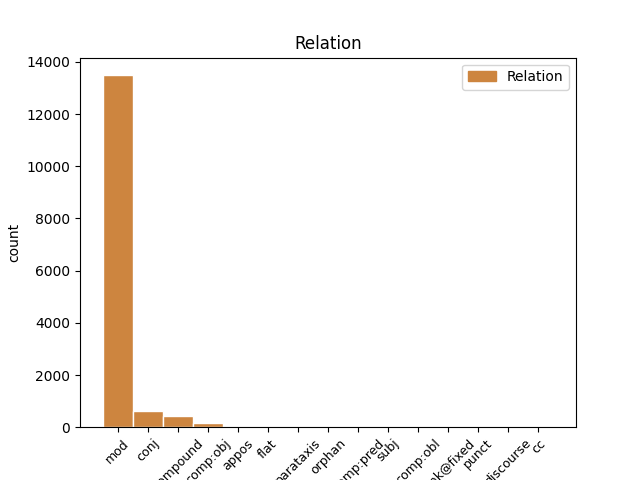
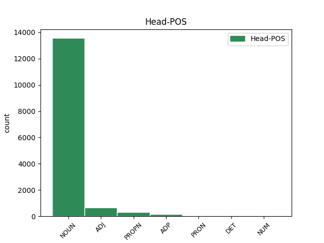
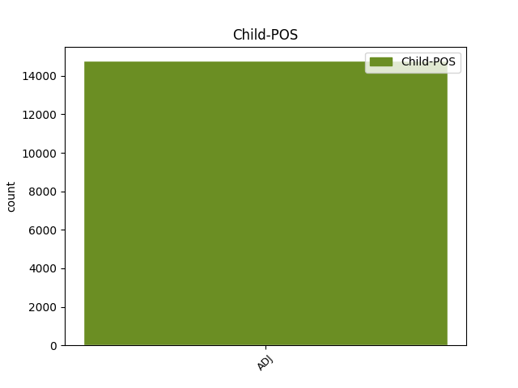

Distribution of features within this leaf



Agreement Rules sorted by frequency.
- When the dependent token is the modifer(mod) of the head token, and the dependent token is ADJ.
1 Nakon _ _ _ _ 0 _ _ _
2 odluke _ _ _ _ 0 _ _ _
3 Europskog europski ADJ Agpmsgy Case=Gen|Definite=Def|Degree=Pos|Gender=Masc|Number=Sing 4 mod _ _
4 suda sud NOUN Ncmsg Case=Gen|Gender=Masc|Number=Sing 0 _ _ _
5 u _ _ _ _ 0 _ _ _
6 Strasbourgu _ _ _ _ 0 _ _ _
1 Slikovito _ _ _ _ 0 _ _ _
2 rečeno _ _ _ _ 0 _ _ _
3 , _ _ _ _ 0 _ _ _
4 uobičajen uobičajen ADJ Agpmsnn Case=Nom|Definite=Ind|Degree=Pos|Gender=Masc|Number=Sing 0 _ _ _
5 , _ _ _ _ 0 _ _ _
6 i _ _ _ _ 0 _ _ _
7 modno _ _ _ _ 0 _ _ _
8 nametnut nametnut ADJ Agpmsnn Case=Nom|Definite=Ind|Degree=Pos|Gender=Masc|Number=Sing 4 conj _ _
9 način _ _ _ _ 0 _ _ _
10 odijevanja _ _ _ _ 0 _ _ _
11 suvremene _ _ _ _ 0 _ _ _
12 žene _ _ _ _ 0 _ _ _
13 karakteriziraju _ _ _ _ 0 _ _ _
14 duboki _ _ _ _ 0 _ _ _
15 izrazi _ _ _ _ 0 _ _ _
16 gdje _ _ _ _ 0 _ _ _
17 god _ _ _ _ 0 _ _ _
18 je _ _ _ _ 0 _ _ _
19 i _ _ _ _ 0 _ _ _
20 koliko _ _ _ _ 0 _ _ _
21 god _ _ _ _ 0 _ _ _
22 je _ _ _ _ 0 _ _ _
23 moguće _ _ _ _ 0 _ _ _
24 . _ _ _ _ 0 _ _ _
1 ( _ _ _ _ 0 _ _ _
2 3 _ _ _ _ 0 _ _ _
3 ) _ _ _ _ 0 _ _ _
4 Za _ _ _ _ 0 _ _ _
5 dio _ _ _ _ 0 _ _ _
6 građevinskog _ _ _ _ 0 _ _ _
7 područja _ _ _ _ 0 _ _ _
8 naselja _ _ _ _ 0 _ _ _
9 Novi nov ADJ Agpmsny Case=Nom|Definite=Def|Degree=Pos|Gender=Masc|Number=Sing 10 compound _ _
10 Vinodolski Vinodolski PROPN Npmsn Case=Nom|Gender=Masc|Number=Sing 0 _ _ _
11 NA1 _ _ _ _ 0 _ _ _
12 1 _ _ _ _ 0 _ _ _
13 - _ _ _ _ 0 _ _ _
14 registriranu _ _ _ _ 0 _ _ _
15 povijesnu _ _ _ _ 0 _ _ _
16 graditeljsku _ _ _ _ 0 _ _ _
17 cjelinu _ _ _ _ 0 _ _ _
18 , _ _ _ _ 0 _ _ _
19 moguća _ _ _ _ 0 _ _ _
20 su _ _ _ _ 0 _ _ _
21 odstupanja _ _ _ _ 0 _ _ _
22 od _ _ _ _ 0 _ _ _
23 zadanih _ _ _ _ 0 _ _ _
24 graničnih _ _ _ _ 0 _ _ _
25 vrijednosti _ _ _ _ 0 _ _ _
26 navedenih _ _ _ _ 0 _ _ _
27 u _ _ _ _ 0 _ _ _
28 člancima _ _ _ _ 0 _ _ _
29 27. _ _ _ _ 0 _ _ _
30 i _ _ _ _ 0 _ _ _
31 28. _ _ _ _ 0 _ _ _
32 Ovih _ _ _ _ 0 _ _ _
33 Odredbi _ _ _ _ 0 _ _ _
34 ali _ _ _ _ 0 _ _ _
35 samo _ _ _ _ 0 _ _ _
36 u _ _ _ _ 0 _ _ _
37 smislu _ _ _ _ 0 _ _ _
38 uvjeta _ _ _ _ 0 _ _ _
39 određenih _ _ _ _ 0 _ _ _
40 od _ _ _ _ 0 _ _ _
41 nadležnog _ _ _ _ 0 _ _ _
42 Konzervatorskog _ _ _ _ 0 _ _ _
43 odjela _ _ _ _ 0 _ _ _
44 ( _ _ _ _ 0 _ _ _
45 označeno _ _ _ _ 0 _ _ _
46 kao _ _ _ _ 0 _ _ _
47 gradsko _ _ _ _ 0 _ _ _
48 naselje _ _ _ _ 0 _ _ _
49 - _ _ _ _ 0 _ _ _
50 zone _ _ _ _ 0 _ _ _
51 14 _ _ _ _ 0 _ _ _
52 A _ _ _ _ 0 _ _ _
53 i _ _ _ _ 0 _ _ _
54 14 _ _ _ _ 0 _ _ _
55 B _ _ _ _ 0 _ _ _
56 na _ _ _ _ 0 _ _ _
57 kartografskom _ _ _ _ 0 _ _ _
58 prikazu _ _ _ _ 0 _ _ _
59 br. _ _ _ _ 0 _ _ _
60 4.1. _ _ _ _ 0 _ _ _
61 » _ _ _ _ 0 _ _ _
62 Građevinska _ _ _ _ 0 _ _ _
63 područja _ _ _ _ 0 _ _ _
64 « _ _ _ _ 0 _ _ _
65 u _ _ _ _ 0 _ _ _
66 mjerilu _ _ _ _ 0 _ _ _
67 1:5000 _ _ _ _ 0 _ _ _
68 ) _ _ _ _ 0 _ _ _
69 . _ _ _ _ 0 _ _ _
1 Ukupnost _ _ _ _ 0 _ _ _
2 činjenica _ _ _ _ 0 _ _ _
3 koje _ _ _ _ 0 _ _ _
4 služe _ _ _ _ 0 _ _ _
5 tome _ _ _ _ 0 _ _ _
6 da _ _ _ _ 0 _ _ _
7 se _ _ _ _ 0 _ _ _
8 jedna _ _ _ _ 0 _ _ _
9 osoba _ _ _ _ 0 _ _ _
10 razlikuje _ _ _ _ 0 _ _ _
11 od od ADP Sg Case=Gen 0 _ _ _
12 bilo _ _ _ _ 0 _ _ _
13 koje _ _ _ _ 0 _ _ _
14 druge drugi ADJ Mlofsg Case=Gen|Degree=Pos|Gender=Fem|Number=Sing 11 comp:obj _ _
15 čini _ _ _ _ 0 _ _ _
16 njezin _ _ _ _ 0 _ _ _
17 identitet _ _ _ _ 0 _ _ _
18 . _ _ _ _ 0 _ _ _
1 Dok _ _ _ _ 0 _ _ _
2 je _ _ _ _ 0 _ _ _
3 prethodno _ _ _ _ 0 _ _ _
4 bilo _ _ _ _ 0 _ _ _
5 govora _ _ _ _ 0 _ _ _
6 kako _ _ _ _ 0 _ _ _
7 će _ _ _ _ 0 _ _ _
8 Marija _ _ _ _ 0 _ _ _
9 roditi _ _ _ _ 0 _ _ _
10 Sina _ _ _ _ 0 _ _ _
11 ( _ _ _ _ 0 _ _ _
12 r. _ _ _ _ 0 _ _ _
13 31 _ _ _ _ 0 _ _ _
14 ) _ _ _ _ 0 _ _ _
15 , _ _ _ _ 0 _ _ _
16 koji _ _ _ _ 0 _ _ _
17 će _ _ _ _ 0 _ _ _
18 biti _ _ _ _ 0 _ _ _
19 velik _ _ _ _ 0 _ _ _
20 i _ _ _ _ 0 _ _ _
21 zvati _ _ _ _ 0 _ _ _
22 se _ _ _ _ 0 _ _ _
23 Sin _ _ _ _ 0 _ _ _
24 Previšnjega _ _ _ _ 0 _ _ _
25 ( _ _ _ _ 0 _ _ _
26 r. _ _ _ _ 0 _ _ _
27 32 _ _ _ _ 0 _ _ _
28 ) _ _ _ _ 0 _ _ _
29 , _ _ _ _ 0 _ _ _
30 ovdje _ _ _ _ 0 _ _ _
31 je _ _ _ _ 0 _ _ _
32 Isus _ _ _ _ 0 _ _ _
33 prvi _ _ _ _ 0 _ _ _
34 put _ _ _ _ 0 _ _ _
35 nazvan _ _ _ _ 0 _ _ _
36 Sinom _ _ _ _ 0 _ _ _
37 Božjim _ _ _ _ 0 _ _ _
38 , _ _ _ _ 0 _ _ _
39 jer _ _ _ _ 0 _ _ _
40 njegovo _ _ _ _ 0 _ _ _
41 začeće _ _ _ _ 0 _ _ _
42 je _ _ _ _ 0 _ _ _
43 djelo _ _ _ _ 0 _ _ _
44 Duha Duh NOUN Ncmsg Case=Gen|Gender=Masc|Number=Sing 0 _ _ _
45 Svetoga Sveti ADJ Agpmsgy Case=Gen|Definite=Def|Degree=Pos|Gender=Masc|Number=Sing 44 flat _ SpaceAfter=No
46 . _ _ _ _ 0 _ _ _
1 Kod _ _ _ _ 0 _ _ _
2 nas _ _ _ _ 0 _ _ _
3 je _ _ _ _ 0 _ _ _
4 provedena _ _ _ _ 0 _ _ _
5 jedna _ _ _ _ 0 _ _ _
6 necivilizirana _ _ _ _ 0 _ _ _
7 i _ _ _ _ 0 _ _ _
8 kontraproduktivna _ _ _ _ 0 _ _ _
9 stvar stvar NOUN Ncfsn Case=Nom|Gender=Fem|Number=Sing 0 _ _ _
10 ( _ _ _ _ 0 _ _ _
11 zvana zvan ADJ Agpfsny Case=Nom|Definite=Def|Degree=Pos|Gender=Fem|Number=Sing 9 parataxis _ _
12 pretvorba _ _ _ _ 0 _ _ _
13 i _ _ _ _ 0 _ _ _
14 privatizacija _ _ _ _ 0 _ _ _
15 ) _ _ _ _ 0 _ _ _
16 i _ _ _ _ 0 _ _ _
17 to _ _ _ _ 0 _ _ _
18 jest _ _ _ _ 0 _ _ _
19 problem _ _ _ _ 0 _ _ _
20 koji _ _ _ _ 0 _ _ _
21 kod _ _ _ _ 0 _ _ _
22 nas _ _ _ _ 0 _ _ _
23 stalno _ _ _ _ 0 _ _ _
24 visi _ _ _ _ 0 _ _ _
25 i _ _ _ _ 0 _ _ _
26 traži _ _ _ _ 0 _ _ _
27 adekvatni _ _ _ _ 0 _ _ _
28 odgovor _ _ _ _ 0 _ _ _
29 . _ _ _ _ 0 _ _ _
1 Podsjetimo _ _ _ _ 0 _ _ _
2 , _ _ _ _ 0 _ _ _
3 prošle _ _ _ _ 0 _ _ _
4 godine _ _ _ _ 0 _ _ _
5 nakon _ _ _ _ 0 _ _ _
6 prvog _ _ _ _ 0 _ _ _
7 upisnog _ _ _ _ 0 _ _ _
8 kruga _ _ _ _ 0 _ _ _
9 mjesta _ _ _ _ 0 _ _ _
10 je _ _ _ _ 0 _ _ _
11 osim _ _ _ _ 0 _ _ _
12 za _ _ _ _ 0 _ _ _
13 studij _ _ _ _ 0 _ _ _
14 klasičnih _ _ _ _ 0 _ _ _
15 jezika jezik NOUN Ncmpg Case=Gen|Gender=Masc|Number=Plur 0 _ _ _
16 , _ _ _ _ 0 _ _ _
17 grčkog grčki ADJ Agpmsgy Case=Gen|Definite=Def|Degree=Pos|Gender=Masc|Number=Sing 15 appos _ _
18 i _ _ _ _ 0 _ _ _
19 latinskog _ _ _ _ 0 _ _ _
20 za _ _ _ _ 0 _ _ _
21 što _ _ _ _ 0 _ _ _
22 se _ _ _ _ 0 _ _ _
23 prijavilo _ _ _ _ 0 _ _ _
24 tek _ _ _ _ 0 _ _ _
25 osam _ _ _ _ 0 _ _ _
26 kandidata _ _ _ _ 0 _ _ _
27 , _ _ _ _ 0 _ _ _
28 ostalo _ _ _ _ 0 _ _ _
29 na _ _ _ _ 0 _ _ _
30 odjelima _ _ _ _ 0 _ _ _
31 za _ _ _ _ 0 _ _ _
32 njemački _ _ _ _ 0 _ _ _
33 jezik _ _ _ _ 0 _ _ _
34 , _ _ _ _ 0 _ _ _
35 arheologije _ _ _ _ 0 _ _ _
36 i _ _ _ _ 0 _ _ _
37 knjižničarstva _ _ _ _ 0 _ _ _
38 . _ _ _ _ 0 _ _ _
1 Gotovo _ _ _ _ 0 _ _ _
2 u _ _ _ _ 0 _ _ _
3 svim _ _ _ _ 0 _ _ _
4 državama _ _ _ _ 0 _ _ _
5 , _ _ _ _ 0 _ _ _
6 privatizacija _ _ _ _ 0 _ _ _
7 zemljišta _ _ _ _ 0 _ _ _
8 je _ _ _ _ 0 _ _ _
9 u _ _ _ _ 0 _ _ _
10 slučajevima _ _ _ _ 0 _ _ _
11 gdje _ _ _ _ 0 _ _ _
12 je _ _ _ _ 0 _ _ _
13 ovo _ _ _ _ 0 _ _ _
14 primjenjivo _ _ _ _ 0 _ _ _
15 bila _ _ _ _ 0 _ _ _
16 započeta započeti ADJ Appfsny Case=Nom|Definite=Def|Degree=Pos|Gender=Fem|Number=Sing|VerbForm=Part|Voice=Pass 0 _ _ _
17 i _ _ _ _ 0 _ _ _
18 dovršena _ _ _ _ 0 _ _ _
19 prva prvi ADJ Mlofsn Case=Nom|Degree=Pos|Gender=Fem|Number=Sing 16 comp:pred _ SpaceAfter=No
20 , _ _ _ _ 0 _ _ _
21 nakon _ _ _ _ 0 _ _ _
22 čega _ _ _ _ 0 _ _ _
23 su _ _ _ _ 0 _ _ _
24 uslijedile _ _ _ _ 0 _ _ _
25 kuće _ _ _ _ 0 _ _ _
26 , _ _ _ _ 0 _ _ _
27 maloprodajni _ _ _ _ 0 _ _ _
28 dućani _ _ _ _ 0 _ _ _
29 i _ _ _ _ 0 _ _ _
30 sitne _ _ _ _ 0 _ _ _
31 uslužne _ _ _ _ 0 _ _ _
32 djelatnosti _ _ _ _ 0 _ _ _
33 . _ _ _ _ 0 _ _ _
1 Konzerve _ _ _ _ 0 _ _ _
2 od _ _ _ _ 0 _ _ _
3 usitnjenog _ _ _ _ 0 _ _ _
4 mesa _ _ _ _ 0 _ _ _
5 moraju _ _ _ _ 0 _ _ _
6 ispunjavati _ _ _ _ 0 _ _ _
7 sljedeće _ _ _ _ 0 _ _ _
8 uvjete _ _ _ _ 0 _ _ _
9 : _ _ _ _ 0 _ _ _
10 sadržaj _ _ _ _ 0 _ _ _
11 konzerve _ _ _ _ 0 _ _ _
12 mora _ _ _ _ 0 _ _ _
13 biti _ _ _ _ 0 _ _ _
14 homogen _ _ _ _ 0 _ _ _
15 i _ _ _ _ 0 _ _ _
16 kompaktan _ _ _ _ 0 _ _ _
17 tako _ _ _ _ 0 _ _ _
18 da _ _ _ _ 0 _ _ _
19 se _ _ _ _ 0 _ _ _
20 može _ _ _ _ 0 _ _ _
21 narezivati _ _ _ _ 0 _ _ _
22 , _ _ _ _ 0 _ _ _
23 odnosno _ _ _ _ 0 _ _ _
24 ne _ _ _ _ 0 _ _ _
25 smije _ _ _ _ 0 _ _ _
26 biti _ _ _ _ 0 _ _ _
27 maziv _ _ _ _ 0 _ _ _
28 ; _ _ _ _ 0 _ _ _
29 sadržaj _ _ _ _ 0 _ _ _
30 konzerve _ _ _ _ 0 _ _ _
31 na _ _ _ _ 0 _ _ _
32 presjeku _ _ _ _ 0 _ _ _
33 može _ _ _ _ 0 _ _ _
34 imati _ _ _ _ 0 _ _ _
35 vidljive _ _ _ _ 0 _ _ _
36 komadiće _ _ _ _ 0 _ _ _
37 usitnjenog _ _ _ _ 0 _ _ _
38 mesa _ _ _ _ 0 _ _ _
39 i _ _ _ _ 0 _ _ _
40 masnog _ _ _ _ 0 _ _ _
41 tkiva _ _ _ _ 0 _ _ _
42 ; _ _ _ _ 0 _ _ _
43 miris _ _ _ _ 0 _ _ _
44 i _ _ _ _ 0 _ _ _
45 okus _ _ _ _ 0 _ _ _
46 treba _ _ _ _ 0 _ _ _
47 biti _ _ _ _ 0 _ _ _
48 svojstven _ _ _ _ 0 _ _ _
49 proizvodu _ _ _ _ 0 _ _ _
50 , _ _ _ _ 0 _ _ _
51 a _ _ _ _ 0 _ _ _
52 boja boja NOUN Ncfsn Case=Nom|Gender=Fem|Number=Sing 0 _ _ _
53 postojana postojan ADJ Agpfsny Case=Nom|Definite=Def|Degree=Pos|Gender=Fem|Number=Sing 52 orphan _ orig_deprel=xcomp|SpaceAfter=No
54 ; _ _ _ _ 0 _ _ _
55 gotov _ _ _ _ 0 _ _ _
56 proizvod _ _ _ _ 0 _ _ _
57 može _ _ _ _ 0 _ _ _
58 imati _ _ _ _ 0 _ _ _
59 do _ _ _ _ 0 _ _ _
60 10 _ _ _ _ 0 _ _ _
61 % _ _ _ _ 0 _ _ _
62 izlučene _ _ _ _ 0 _ _ _
63 masnoće _ _ _ _ 0 _ _ _
64 i _ _ _ _ 0 _ _ _
65 želea _ _ _ _ 0 _ _ _
66 . _ _ _ _ 0 _ _ _
1 Nade _ _ _ _ 0 _ _ _
2 onih _ _ _ _ 0 _ _ _
3 koji _ _ _ _ 0 _ _ _
4 računaju _ _ _ _ 0 _ _ _
5 na _ _ _ _ 0 _ _ _
6 rast _ _ _ _ 0 _ _ _
7 dinara _ _ _ _ 0 _ _ _
8 nedavno _ _ _ _ 0 _ _ _
9 su _ _ _ _ 0 _ _ _
10 na na ADP Sa Case=Acc 0 _ _ _
11 kratko kratak ADJ Agpnsay Case=Acc|Definite=Def|Degree=Pos|Gender=Neut|Number=Sing 10 unk@fixed _ _
12 dobile _ _ _ _ 0 _ _ _
13 oslonac _ _ _ _ 0 _ _ _
14 . _ _ _ _ 0 _ _ _
1 Jedna _ _ _ _ 0 _ _ _
2 je _ _ _ _ 0 _ _ _
3 ugovor _ _ _ _ 0 _ _ _
4 o _ _ _ _ 0 _ _ _
5 doživotnom _ _ _ _ 0 _ _ _
6 uzdržavanju _ _ _ _ 0 _ _ _
7 prema _ _ _ _ 0 _ _ _
8 kojem _ _ _ _ 0 _ _ _
9 skrbnik _ _ _ _ 0 _ _ _
10 postaje _ _ _ _ 0 _ _ _
11 vlasnik _ _ _ _ 0 _ _ _
12 štićenikove _ _ _ _ 0 _ _ _
13 imovine _ _ _ _ 0 _ _ _
14 tek _ _ _ _ 0 _ _ _
15 nakon _ _ _ _ 0 _ _ _
16 njegove _ _ _ _ 0 _ _ _
17 smrti _ _ _ _ 0 _ _ _
18 , _ _ _ _ 0 _ _ _
19 a _ _ _ _ 0 _ _ _
20 druga drugi ADJ Mlofsn Case=Nom|Degree=Pos|Gender=Fem|Number=Sing 21 subj _ _
21 ugovor ugovor NOUN Ncmsn Case=Nom|Gender=Masc|Number=Sing 0 _ _ _
22 o _ _ _ _ 0 _ _ _
23 dosmrtnom _ _ _ _ 0 _ _ _
24 uzdržavanju _ _ _ _ 0 _ _ _
25 prema _ _ _ _ 0 _ _ _
26 kojem _ _ _ _ 0 _ _ _
27 skrbnik _ _ _ _ 0 _ _ _
28 odmah _ _ _ _ 0 _ _ _
29 postaje _ _ _ _ 0 _ _ _
30 vlasnik _ _ _ _ 0 _ _ _
31 imovine _ _ _ _ 0 _ _ _
32 osobe _ _ _ _ 0 _ _ _
33 o _ _ _ _ 0 _ _ _
34 kojoj _ _ _ _ 0 _ _ _
35 se _ _ _ _ 0 _ _ _
36 skrbi _ _ _ _ 0 _ _ _
37 . _ _ _ _ 0 _ _ _
1 Znanost _ _ _ _ 0 _ _ _
2 danas _ _ _ _ 0 _ _ _
3 poznaje _ _ _ _ 0 _ _ _
4 brojne _ _ _ _ 0 _ _ _
5 uzroke _ _ _ _ 0 _ _ _
6 ovoj _ _ _ _ 0 _ _ _
7 pojavi _ _ _ _ 0 _ _ _
8 : _ _ _ _ 0 _ _ _
9 od _ _ _ _ 0 _ _ _
10 nasljednih _ _ _ _ 0 _ _ _
11 faktora _ _ _ _ 0 _ _ _
12 i _ _ _ _ 0 _ _ _
13 hormonalnih _ _ _ _ 0 _ _ _
14 poremećaja _ _ _ _ 0 _ _ _
15 , _ _ _ _ 0 _ _ _
16 do _ _ _ _ 0 _ _ _
17 loših _ _ _ _ 0 _ _ _
18 cipela _ _ _ _ 0 _ _ _
19 i _ _ _ _ 0 _ _ _
20 uske uzak ADJ Agpfsgy Case=Gen|Definite=Def|Degree=Pos|Gender=Fem|Number=Sing 21 punct _ _
21 odjeće odjeća NOUN Ncfsg Case=Gen|Gender=Fem|Number=Sing 0 _ _ _
22 , _ _ _ _ 0 _ _ _
23 no _ _ _ _ 0 _ _ _
24 najčešće _ _ _ _ 0 _ _ _
25 se _ _ _ _ 0 _ _ _
26 smatra _ _ _ _ 0 _ _ _
27 kako _ _ _ _ 0 _ _ _
28 je _ _ _ _ 0 _ _ _
29 glavni _ _ _ _ 0 _ _ _
30 uzrok _ _ _ _ 0 _ _ _
31 slaba _ _ _ _ 0 _ _ _
32 cirkulacija _ _ _ _ 0 _ _ _
33 u _ _ _ _ 0 _ _ _
34 venama _ _ _ _ 0 _ _ _
35 , _ _ _ _ 0 _ _ _
36 od _ _ _ _ 0 _ _ _
37 čega _ _ _ _ 0 _ _ _
38 praktički _ _ _ _ 0 _ _ _
39 sve _ _ _ _ 0 _ _ _
40 i _ _ _ _ 0 _ _ _
41 počinje _ _ _ _ 0 _ _ _
42 . _ _ _ _ 0 _ _ _
1 Crvenkovski _ _ _ _ 0 _ _ _
2 : _ _ _ _ 0 _ _ _
3 Republika _ _ _ _ 0 _ _ _
4 Makedonija _ _ _ _ 0 _ _ _
5 ima _ _ _ _ 0 _ _ _
6 i _ _ _ _ 0 _ _ _
7 institucionalni institucionalan ADJ Agpmsayn Animacy=Inan|Case=Acc|Definite=Def|Degree=Pos|Gender=Masc|Number=Sing 8 cc _ _
8 kapacitet kapacitet NOUN Ncmsan Animacy=Inan|Case=Acc|Gender=Masc|Number=Sing 0 _ _ _
9 i _ _ _ _ 0 _ _ _
10 demokratski _ _ _ _ 0 _ _ _
11 potencijal _ _ _ _ 0 _ _ _
12 , _ _ _ _ 0 _ _ _
13 a _ _ _ _ 0 _ _ _
14 još _ _ _ _ 0 _ _ _
15 je _ _ _ _ 0 _ _ _
16 važnija _ _ _ _ 0 _ _ _
17 njena _ _ _ _ 0 _ _ _
18 čvrsta _ _ _ _ 0 _ _ _
19 odlučnost _ _ _ _ 0 _ _ _
20 da _ _ _ _ 0 _ _ _
21 dobije _ _ _ _ 0 _ _ _
22 datum _ _ _ _ 0 _ _ _
23 početka _ _ _ _ 0 _ _ _
24 pregovora _ _ _ _ 0 _ _ _
25 do _ _ _ _ 0 _ _ _
26 kraja _ _ _ _ 0 _ _ _
27 2008. _ _ _ _ 0 _ _ _
1 Ako _ _ _ _ 0 _ _ _
2 bi _ _ _ _ 0 _ _ _
3 SDS _ _ _ _ 0 _ _ _
4 odlučila _ _ _ _ 0 _ _ _
5 blokirati _ _ _ _ 0 _ _ _
6 reformu _ _ _ _ 0 _ _ _
7 policije _ _ _ _ 0 _ _ _
8 i _ _ _ _ 0 _ _ _
9 samim sam ADJ Agpnsiy Case=Ins|Definite=Def|Degree=Pos|Gender=Neut|Number=Sing 10 discourse _ _
10 tim taj DET Pd-nsi Case=Ins|Gender=Neut|Number=Sing|PronType=Dem 0 _ _ _
11 europsku _ _ _ _ 0 _ _ _
12 budućnost _ _ _ _ 0 _ _ _
13 BiH _ _ _ _ 0 _ _ _
14 , _ _ _ _ 0 _ _ _
15 ta _ _ _ _ 0 _ _ _
16 stranka _ _ _ _ 0 _ _ _
17 i _ _ _ _ 0 _ _ _
18 entitet _ _ _ _ 0 _ _ _
19 bosanskih _ _ _ _ 0 _ _ _
20 Srba _ _ _ _ 0 _ _ _
21 izabrali _ _ _ _ 0 _ _ _
22 bi _ _ _ _ 0 _ _ _
23 " _ _ _ _ 0 _ _ _
24 put _ _ _ _ 0 _ _ _
25 izolacije _ _ _ _ 0 _ _ _
26 i _ _ _ _ 0 _ _ _
27 stagnacije _ _ _ _ 0 _ _ _
28 " _ _ _ _ 0 _ _ _
29 , _ _ _ _ 0 _ _ _
30 upozorio _ _ _ _ 0 _ _ _
31 je _ _ _ _ 0 _ _ _
32 Ashdownov _ _ _ _ 0 _ _ _
33 ured _ _ _ _ 0 _ _ _
34 . _ _ _ _ 0 _ _ _
Disagree Examples:
1 Nema _ _ _ _ 0 _ _ _
2 sumnje _ _ _ _ 0 _ _ _
3 kako _ _ _ _ 0 _ _ _
4 će _ _ _ _ 0 _ _ _
5 naša _ _ _ _ 0 _ _ _
6 akcesija _ _ _ _ 0 _ _ _
7 u _ _ _ _ 0 _ _ _
8 Savez _ _ _ _ 0 _ _ _
9 , _ _ _ _ 0 _ _ _
10 kao _ _ _ _ 0 _ _ _
11 i _ _ _ _ 0 _ _ _
12 akcesija _ _ _ _ 0 _ _ _
13 druge _ _ _ _ 0 _ _ _
14 dvije _ _ _ _ 0 _ _ _
15 zemlje _ _ _ _ 0 _ _ _
16 potpisnice potpisnica NOUN Ncfpn Case=Nom|Gender=Fem|Number=Plur 0 _ _ _
17 Jadranske jadranski ADJ Agpfsgy Case=Gen|Definite=Def|Degree=Pos|Gender=Fem|Number=Sing 16 mod _ _
18 povelje _ _ _ _ 0 _ _ _
19 - _ _ _ _ 0 _ _ _
20 Albanije _ _ _ _ 0 _ _ _
21 i _ _ _ _ 0 _ _ _
22 Hrvatske _ _ _ _ 0 _ _ _
23 - _ _ _ _ 0 _ _ _
24 uvelike _ _ _ _ 0 _ _ _
25 pridonijeti _ _ _ _ 0 _ _ _
26 dodatnoj _ _ _ _ 0 _ _ _
27 stabilizaciji _ _ _ _ 0 _ _ _
28 regije _ _ _ _ 0 _ _ _
29 . _ _ _ _ 0 _ _ _
1 Klusmireov _ _ _ _ 0 _ _ _
2 brod _ _ _ _ 0 _ _ _
3 bio _ _ _ _ 0 _ _ _
4 je _ _ _ _ 0 _ _ _
5 dio _ _ _ _ 0 _ _ _
6 humanitarnog _ _ _ _ 0 _ _ _
7 konvoja _ _ _ _ 0 _ _ _
8 deset _ _ _ _ 0 _ _ _
9 brodova _ _ _ _ 0 _ _ _
10 pod _ _ _ _ 0 _ _ _
11 nazivom naziv NOUN Ncmsi Case=Ins|Gender=Masc|Number=Sing 0 _ _ _
12 Slobodna Slobodna ADJ Agpfsny Case=Nom|Definite=Def|Degree=Pos|Gender=Fem|Number=Sing 11 appos _ _
13 Gaza _ _ _ _ 0 _ _ _
14 , _ _ _ _ 0 _ _ _
15 koji _ _ _ _ 0 _ _ _
16 je _ _ _ _ 0 _ _ _
17 bio _ _ _ _ 0 _ _ _
18 na _ _ _ _ 0 _ _ _
19 putu _ _ _ _ 0 _ _ _
20 za _ _ _ _ 0 _ _ _
21 Gazu _ _ _ _ 0 _ _ _
22 prije _ _ _ _ 0 _ _ _
23 no _ _ _ _ 0 _ _ _
24 što _ _ _ _ 0 _ _ _
25 su _ _ _ _ 0 _ _ _
26 ga _ _ _ _ 0 _ _ _
27 zaustavile _ _ _ _ 0 _ _ _
28 grčke _ _ _ _ 0 _ _ _
29 vlasti _ _ _ _ 0 _ _ _
30 . _ _ _ _ 0 _ _ _
1 Iako _ _ _ _ 0 _ _ _
2 je _ _ _ _ 0 _ _ _
3 taj _ _ _ _ 0 _ _ _
4 trend _ _ _ _ 0 _ _ _
5 u _ _ _ _ 0 _ _ _
6 opadanju _ _ _ _ 0 _ _ _
7 , _ _ _ _ 0 _ _ _
8 još _ _ _ _ 0 _ _ _
9 je _ _ _ _ 0 _ _ _
10 dug _ _ _ _ 0 _ _ _
11 put _ _ _ _ 0 _ _ _
12 do _ _ _ _ 0 _ _ _
13 njegova _ _ _ _ 0 _ _ _
14 potpunog _ _ _ _ 0 _ _ _
15 nestanka _ _ _ _ 0 _ _ _
16 " _ _ _ _ 0 _ _ _
17 , _ _ _ _ 0 _ _ _
18 rekla _ _ _ _ 0 _ _ _
19 je _ _ _ _ 0 _ _ _
20 Anica _ _ _ _ 0 _ _ _
21 Tomić _ _ _ _ 0 _ _ _
22 Stojkovska _ _ _ _ 0 _ _ _
23 iz _ _ _ _ 0 _ _ _
24 koalicije koalicija NOUN Ncfsg Case=Gen|Gender=Fem|Number=Sing 0 _ _ _
25 Svi sav ADJ Agpmpny Case=Nom|Definite=Def|Degree=Pos|Gender=Masc|Number=Plur 24 appos _ _
26 za _ _ _ _ 0 _ _ _
27 poštena _ _ _ _ 0 _ _ _
28 suđenja _ _ _ _ 0 _ _ _
29 . _ _ _ _ 0 _ _ _
1 Vrijednost _ _ _ _ 0 _ _ _
2 ulaganja _ _ _ _ 0 _ _ _
3 veća velik ADJ Agcfsny Case=Nom|Definite=Def|Degree=Cmp|Gender=Fem|Number=Sing 7 mod _ _
4 je _ _ _ _ 0 _ _ _
5 od _ _ _ _ 0 _ _ _
6 50 _ _ _ _ 0 _ _ _
7 milijuna milijun NOUN Ncmpg Case=Gen|Gender=Masc|Number=Plur 0 _ _ _
8 eura _ _ _ _ 0 _ _ _
9 , _ _ _ _ 0 _ _ _
10 a _ _ _ _ 0 _ _ _
11 bit _ _ _ _ 0 _ _ _
12 će _ _ _ _ 0 _ _ _
13 otvoreno _ _ _ _ 0 _ _ _
14 150 _ _ _ _ 0 _ _ _
15 novih _ _ _ _ 0 _ _ _
16 radnih _ _ _ _ 0 _ _ _
17 mjesta _ _ _ _ 0 _ _ _
18 . _ _ _ _ 0 _ _ _
1 U _ _ _ _ 0 _ _ _
2 odbojci _ _ _ _ 0 _ _ _
3 na _ _ _ _ 0 _ _ _
4 pijesku _ _ _ _ 0 _ _ _
5 za _ _ _ _ 0 _ _ _
6 žene _ _ _ _ 0 _ _ _
7 , _ _ _ _ 0 _ _ _
8 Grkinje _ _ _ _ 0 _ _ _
9 Vasiliki _ _ _ _ 0 _ _ _
10 Karantasiou _ _ _ _ 0 _ _ _
11 i _ _ _ _ 0 _ _ _
12 Vasiliki _ _ _ _ 0 _ _ _
13 Arvaniti _ _ _ _ 0 _ _ _
14 bile _ _ _ _ 0 _ _ _
15 su _ _ _ _ 0 _ _ _
16 lošije loš ADJ Agcfpny Case=Nom|Definite=Def|Degree=Cmp|Gender=Fem|Number=Plur 18 mod _ _
17 od _ _ _ _ 0 _ _ _
18 Brazilki Brazilke PROPN Npfpg Case=Gen|Gender=Fem|Number=Plur 0 _ _ _
19 Renate _ _ _ _ 0 _ _ _
20 Ribeiro _ _ _ _ 0 _ _ _
21 i _ _ _ _ 0 _ _ _
22 Talite _ _ _ _ 0 _ _ _
23 Rocha _ _ _ _ 0 _ _ _
24 , _ _ _ _ 0 _ _ _
25 s _ _ _ _ 0 _ _ _
26 rezultatom _ _ _ _ 0 _ _ _
27 39-43 _ _ _ _ 0 _ _ _
28 . _ _ _ _ 0 _ _ _